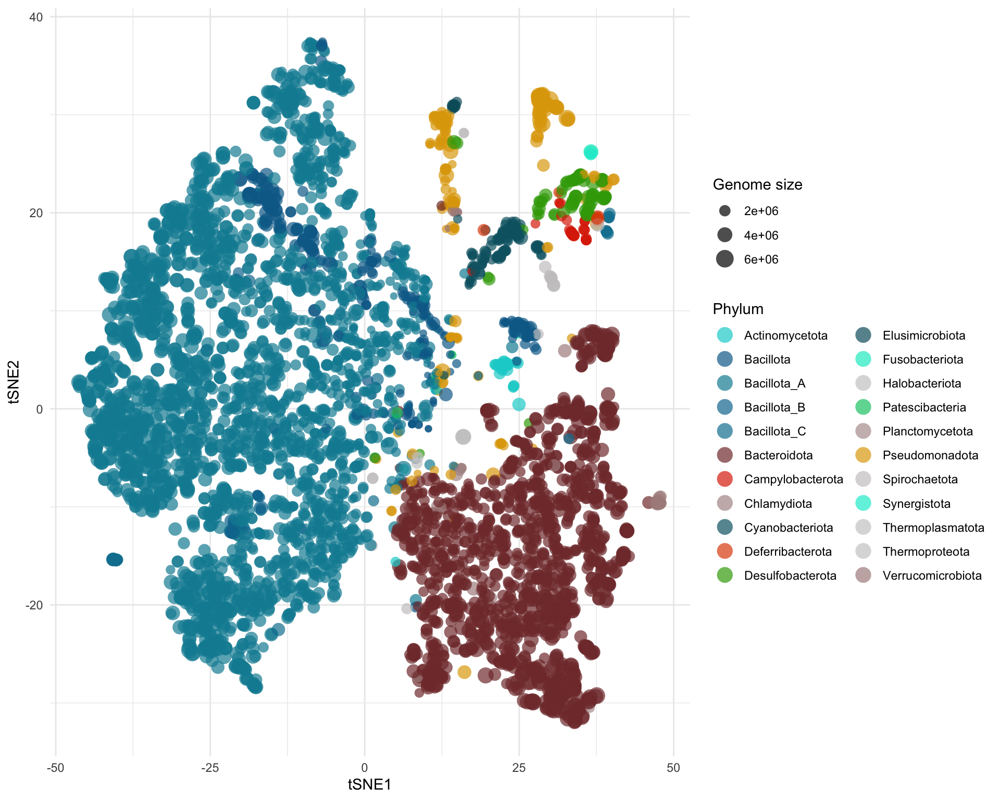

Chapter 4 MAG catalogue
4.1 filter samples with high host data
genome_counts_filt <- genome_counts %>%
select(one_of(c("genome",sample_metadata$sample)))%>%
filter(rowSums(. != 0, na.rm = TRUE) > 0) %>%
select_if(~!all(. == 0))
genome_metadata <- genome_metadata %>%
semi_join(., genome_counts_filt, by = "genome") %>%
arrange(match(genome,genome_counts_filt$genome))
genome_tree <- keep.tip(genome_tree, tip=genome_metadata$genome) # keep only MAG tips
#load("data/genome_gifts.Rdata")4.2 Genome phylogeny
# Generate the phylum color heatmap
phylum_heatmap <- read_tsv("https://raw.githubusercontent.com/earthhologenome/EHI_taxonomy_colour/main/ehi_phylum_colors.tsv") %>%
right_join(genome_metadata, by=join_by(phylum == phylum)) %>%
arrange(match(genome, genome_tree$tip.label)) %>%
select(genome,phylum) %>%
mutate(phylum = factor(phylum, levels = unique(phylum))) %>%
column_to_rownames(var = "genome")
# Generate new species table
newspecies_table <- genome_metadata %>%
mutate(newspecies=ifelse(species=="s__","Y","N")) %>%
select(genome,newspecies) %>%
column_to_rownames(var = "genome")
# Generate table
heatmap <- genome_counts_filt %>%
pivot_longer(!genome,names_to="sample",values_to="abundance") %>%
left_join(sample_metadata,by="sample") %>%
group_by(genome) %>%
summarise(presence=ifelse(sum(abundance)>0,"present","absent")) %>%
column_to_rownames(var="genome")
# Generate basal tree
circular_tree <- force.ultrametric(genome_tree, method="extend") %>% # extend to ultrametric for the sake of visualisation
ggtree(., layout="fan", open.angle=10, size=0.2)***************************************************************
* Note: *
* force.ultrametric does not include a formal method to *
* ultrametricize a tree & should only be used to coerce *
* a phylogeny that fails is.ultrametric due to rounding -- *
* not as a substitute for formal rate-smoothing methods. *
***************************************************************# Add phylum ring
circular_tree <- gheatmap(circular_tree, phylum_heatmap, offset=0.05, width=0.05, colnames=FALSE) +
scale_fill_manual(values=phylum_colors) +
theme(legend.position = "none", plot.margin = margin(0, 0, 0, 0), panel.margin = margin(0, 0, 0, 0))
# Flush color scale to enable a new color scheme in the next ring
circular_tree <- circular_tree + new_scale_fill()
# Add completeness ring
circular_tree <- circular_tree +
new_scale_fill() +
scale_fill_gradient(low = "#d1f4ba", high = "#f4baba") +
geom_fruit(
data=genome_metadata,
geom=geom_bar,
mapping = aes(x=completeness, y=genome, fill=contamination),
offset = 0.3,
pwidth = 0.1,
orientation="y",
stat="identity")
# Add genome-size ring
circular_tree <- circular_tree + new_scale_fill()
circular_tree <- gheatmap(circular_tree, heatmap, offset=0.3, width=0.05, colnames=FALSE) +
scale_fill_manual(values=c("#ffffff","#74C8AE")) +
theme(legend.position = "none", plot.margin = margin(0, 0, 0, 0), panel.margin = margin(0, 0, 0, 0)) +
new_scale_fill()
circular_tree <- gheatmap(circular_tree, newspecies_table, offset=1.2, width=0.05, colnames=FALSE) +
scale_fill_manual(values=c("#f4f4f4","#666666")) +
theme(legend.position = "none", plot.margin = margin(0, 0, 0, 0), panel.margin = margin(0, 0, 0, 0))
# Add text
circular_tree <- circular_tree +
annotate('text', x=2.9, y=0, label='Phylum', family='arial', size=3.5) +
annotate('text', x=3.3, y=0, label='Group', family='arial', size=3.5) +
annotate('text', x=3.8, y=0, label='Genome quality', family='arial', size=3.5) +
annotate('text', x=4.2, y=0, label='New species', family='arial', size=3.5)
#Plot circular tree
circular_tree %>% open_tree(30) %>% rotate_tree(90)4.3 Taxonomy overview
tax_mag <-genome_metadata %>%
group_by(phylum) %>%
summarise(mag_n=n())
tax_mag %>%
mutate(percetage_mag=round(mag_n*100/sum(mag_n), 2)) %>%
arrange(-percetage_mag) %>%
tt()| phylum | mag_n | percetage_mag |
|---|---|---|
| Bacillota_A | 2451 | 53.93 |
| Bacteroidota | 1241 | 27.30 |
| Bacillota | 276 | 6.07 |
| Pseudomonadota | 200 | 4.40 |
| Cyanobacteriota | 98 | 2.16 |
| Desulfobacterota | 75 | 1.65 |
| Campylobacterota | 37 | 0.81 |
| Verrucomicrobiota | 31 | 0.68 |
| Bacillota_B | 26 | 0.57 |
| Bacillota_C | 25 | 0.55 |
| Actinomycetota | 24 | 0.53 |
| Spirochaetota | 21 | 0.46 |
| Elusimicrobiota | 9 | 0.20 |
| Deferribacterota | 7 | 0.15 |
| Chlamydiota | 6 | 0.13 |
| Halobacteriota | 6 | 0.13 |
| Patescibacteria | 4 | 0.09 |
| Fusobacteriota | 3 | 0.07 |
| Thermoplasmatota | 2 | 0.04 |
| Planctomycetota | 1 | 0.02 |
| Synergistota | 1 | 0.02 |
| Thermoproteota | 1 | 0.02 |
4.4 Mag size (MB)
Mags average size (MB)
| Average_corrected_size |
|---|
| 3102846 |
Minimum Mags size (MB)
| genome | domain | phylum | class | order | family | genus | species | completeness | contamination | length | ID | host_species | closest_placement_ani | GC | N50 | contigs | number_genes | cazy_hits | pfam_hits | kegg_hits | number_unannotated_genes | percent_unannotated_genes | DM_batch | MAG_url | taxonomy_level | anno_url | gbk_url | kegg_url | host_order | corrected_size |
|---|---|---|---|---|---|---|---|---|---|---|---|---|---|---|---|---|---|---|---|---|---|---|---|---|---|---|---|---|---|---|
| EHA04963_bin.207 | d__Bacteria | Bacillota | c__Bacilli | o__Mycoplasmatales | f__Hepatoplasmataceae | g__Hepatoplasma | s__Hepatoplasma crinochetorum_B | 94.87 | 0.86 | 616911 | EHM071455 | Podarcis filfolensis | 96.42 | 22.00% | 12186 | 69 | 599 | 5 | 402 | 270 | 189 | 31.6 | DMB0173 | https://sid.erda.dk/share_redirect/BaMZodj9sA/MAG/ABB0594/EHA04963_bin.207.fa.gz | Species | https://sid.erda.dk/share_redirect/BaMZodj9sA/ANN/EHM071455_anno.tsv.gz | https://sid.erda.dk/share_redirect/BaMZodj9sA/ANN/EHM071455.gbk.gz | https://sid.erda.dk/share_redirect/BaMZodj9sA/ANN/EHM071455_kegg.tsv.gz | Squamata | 650269.8 |
Maximum Mags size (MB)
| genome | domain | phylum | class | order | family | genus | species | completeness | contamination | length | ID | host_species | closest_placement_ani | GC | N50 | contigs | number_genes | cazy_hits | pfam_hits | kegg_hits | number_unannotated_genes | percent_unannotated_genes | DM_batch | MAG_url | taxonomy_level | anno_url | gbk_url | kegg_url | host_order | corrected_size |
|---|---|---|---|---|---|---|---|---|---|---|---|---|---|---|---|---|---|---|---|---|---|---|---|---|---|---|---|---|---|---|
| EHA04874_bin.234 | d__Bacteria | Bacillota_A | c__Clostridia | o__Oscillospirales | f__Oscillospiraceae | g__Dysosmobacter | s__ | 52.45 | 5.77 | 6737165 | EHM073291 | Apodemus sylvaticus | 80.56 | 32.00% | 3216 | 2263 | 1759 | 37 | 1212 | 631 | 513 | 29.2 | DMB0173 | https://sid.erda.dk/share_redirect/BaMZodj9sA/MAG/ABB0586/EHA04874_bin.234.fa.gz | Genus | https://sid.erda.dk/share_redirect/BaMZodj9sA/ANN/EHM073291_anno.tsv.gz | https://sid.erda.dk/share_redirect/BaMZodj9sA/ANN/EHM073291.gbk.gz | https://sid.erda.dk/share_redirect/BaMZodj9sA/ANN/EHM073291_kegg.tsv.gz | Rodentia | 12844929 |
Mags arrange by size (MB)
Mags average size and completeness by phylum
genome_metadata %>%
group_by(phylum) %>%
summarise(average_size=mean(corrected_size),
sd_size=sd(corrected_size),
average_comp=mean(completeness),
sd_comp=sd(completeness)) %>%
mutate(Size=str_c(round(average_size,2),"",round(sd_size,2)),
Completeness=str_c(round(average_comp,2),"",round(sd_comp,2))) %>%
arrange(-average_size) %>%
select(phylum, Size, Completeness) %>%
tt()| phylum | Size | Completeness |
|---|---|---|
| Fusobacteriota | 3534768.71431309.69 | 92.4113.01 |
| Halobacteriota | 3526170.011548631.5 | 87.8714.34 |
| Bacteroidota | 3313801.071127187.53 | 82.9213.1 |
| Bacillota_A | 3214100.161006864.44 | 81.5614.77 |
| Desulfobacterota | 3103965.56628148.14 | 87.3613.35 |
| Thermoplasmatota | 3081360.761586748.23 | 90.659.76 |
| Actinomycetota | 3005147.18732346.24 | 76.2914.62 |
| Thermoproteota | NA | NA |
| Bacillota_B | 2928658.46949273.72 | 82.6115.69 |
| Synergistota | NA | NA |
| Bacillota_C | 2668639.25636882.33 | 87.7315.52 |
| Deferribacterota | 2661067.21921379.87 | 91.0213.01 |
| Spirochaetota | 2486701.16488094.26 | 89.713.82 |
| Pseudomonadota | 2474216.71517693.18 | 85.9415.13 |
| Patescibacteria | 2459868.881717152.84 | 77.4216.41 |
| Verrucomicrobiota | 2388485.52946495.28 | 89.1210.02 |
| Bacillota | 2350367.231021000.48 | 86.6712.71 |
| Elusimicrobiota | 2326221.781232827.01 | 88.311.07 |
| Cyanobacteriota | 2263413.24627617.36 | 82.7814.79 |
| Chlamydiota | 1956796.12850082.76 | 93.624.76 |
| Campylobacterota | 1801368.56193903.3 | 95.1610.11 |
| Planctomycetota | NA | NA |
4.5 Genome quality
genome_metadata %>%
summarise(completeness_mean=mean(completeness) %>% round(2) %>% as.character(),
completeness_sd=sd(completeness) %>% round(2) %>% as.character(),
contamination_mean=mean(contamination) %>% round(2),
contamination_sd=sd(contamination) %>% round(2)) %>%
unite("Completeness",completeness_mean, completeness_sd, sep = " ", remove = TRUE) %>%
unite("Contamination",contamination_mean, contamination_sd, sep = " ", remove = TRUE) %>%
tt()| Completeness | Contamination |
|---|---|
| 82.83 14.28 | 2.23 1.96 |
4.5.0.1 Genomes per host species
genome_metadata %>%
ggplot(aes(x = host_species, y = completeness, colour = host_species)) +
geom_jitter(size = 2, alpha = 0.3, height = 0, width = 0.2) +
stat_summary(fun = "mean", geom = "crossbar", colour = "black", width = 0.4) +
facet_wrap(~host_order, scales = "free") +
scale_colour_manual(values = species_colours) +
theme_classic() +
theme(
legend.position = "none",
axis.text.x = element_text(face = "italic", angle = 90, vjust = 0.5, hjust = 1)
) +
labs(x = "", y = "CheckM2 completeness score")genome_metadata %>%
ggplot(aes(x = host_species, y = contamination, colour = host_species)) +
geom_jitter(size = 2, alpha = 0.3, height = 0, width = 0.2) +
stat_summary(fun = "mean", geom = "crossbar", colour = "black", width = 0.4) +
facet_wrap(~host_order, scales = "free") +
scale_colour_manual(values = species_colours) +
theme_classic() +
theme(
legend.position = "none",
axis.text.x = element_text(face = "italic", angle = 90, vjust = 0.5, hjust = 1)
) +
labs(x = "", y = "CheckM2 contamination score")4.5.0.2 Genome statistics per host species
genome_metadata %>%
group_by(host_species) %>%
mutate(n_mags = n()) %>%
ungroup() %>%
ggplot(aes(x = host_species, y = n_mags, colour = host_species)) +
geom_jitter(size = 2, alpha = 0.3, height = 0, width = 0.2) +
facet_wrap(~host_order, scales = "free") +
scale_colour_manual(values = species_colours) +
scale_y_continuous(limits = c(75, 450)) +
theme_classic() +
theme(
legend.position = "none",
axis.text.x = element_text(face = "italic", angle = 90, vjust = 0.5, hjust = 1)
) +
labs(x = "", y = "Number of MAGs")#Generate quality biplot
genome_biplot <- genome_metadata %>%
select(c(genome,domain,phylum,completeness,contamination,length)) %>%
arrange(match(genome, rev(genome_tree$tip.label))) %>% #sort MAGs according to phylogenetic tree
ggplot(aes(x=completeness,y=contamination,size=length,color=phylum)) +
geom_point(alpha=0.7) +
ylim(c(10,0)) +
scale_color_manual(values=phylum_colors) +
labs(y= "Contamination", x = "Completeness") +
theme_classic() +
theme(legend.position = "none")
#Generate contamination boxplot
genome_contamination <- genome_metadata %>%
ggplot(aes(y=contamination)) +
ylim(c(10,0)) +
geom_boxplot(colour = "#999999", fill="#cccccc") +
theme_void() +
theme(legend.position = "none",
axis.title.x = element_blank(),
axis.title.y = element_blank(),
axis.text.y=element_blank(),
axis.ticks.y=element_blank(),
axis.text.x=element_blank(),
axis.ticks.x=element_blank(),
plot.margin = unit(c(0, 0, 0.40, 0),"inches")) #add bottom-margin (top, right, bottom, left)
#Generate completeness boxplot
genome_completeness <- genome_metadata %>%
ggplot(aes(x=completeness)) +
xlim(c(50,100)) +
geom_boxplot(colour = "#999999", fill="#cccccc") +
theme_void() +
theme(legend.position = "none",
axis.title.x = element_blank(),
axis.title.y = element_blank(),
axis.text.y=element_blank(),
axis.ticks.y=element_blank(),
axis.text.x=element_blank(),
axis.ticks.x=element_blank(),
plot.margin = unit(c(0, 0, 0, 0.50),"inches")) #add left-margin (top, right, bottom, left)
#Render composite figure
grid.arrange(grobs = list(genome_completeness,genome_biplot,genome_contamination),
layout_matrix = rbind(c(1,1,1,1,1,1,1,1,1,1,1,4),
c(2,2,2,2,2,2,2,2,2,2,2,3),
c(2,2,2,2,2,2,2,2,2,2,2,3),
c(2,2,2,2,2,2,2,2,2,2,2,3),
c(2,2,2,2,2,2,2,2,2,2,2,3),
c(2,2,2,2,2,2,2,2,2,2,2,3),
c(2,2,2,2,2,2,2,2,2,2,2,3),
c(2,2,2,2,2,2,2,2,2,2,2,3),
c(2,2,2,2,2,2,2,2,2,2,2,3),
c(2,2,2,2,2,2,2,2,2,2,2,3),
c(2,2,2,2,2,2,2,2,2,2,2,3),
c(2,2,2,2,2,2,2,2,2,2,2,3)))4.6 Functional overview
# Aggregate basal GIFT into functions
GIFTs_elements <- to.elements(genome_gifts, GIFT_db)
function_table <- GIFTs_elements %>%
to.functions(., GIFT_db)
# Generate basal tree
function_tree <- force.ultrametric(genome_tree, method="extend") %>%
ggtree(., size = 0.3) ***************************************************************
* Note: *
* force.ultrametric does not include a formal method to *
* ultrametricize a tree & should only be used to coerce *
* a phylogeny that fails is.ultrametric due to rounding -- *
* not as a substitute for formal rate-smoothing methods. *
***************************************************************#Add phylum colors next to the tree tips
function_tree <- gheatmap(function_tree, phylum_heatmap, offset=0, width=0.1, colnames=FALSE) +
scale_fill_manual(values=phylum_colors) +
labs(fill="Phylum")
#Reset fill scale to use a different colour profile in the heatmap
function_tree <- function_tree + new_scale_fill()
#Add functions heatmap
function_tree <- gheatmap(function_tree, function_table, offset=0.5, width=3.5, colnames=FALSE, color = NA) +
vexpand(.08) +
coord_cartesian(clip = "off") +
scale_fill_gradient(low = "#f4f4f4", high = "steelblue", na.value="white") +
labs(fill="GIFT")
#Reset fill scale to use a different colour profile in the heatmap
function_tree <- function_tree + new_scale_fill()
# Add completeness barplots
function_tree <- function_tree +
geom_fruit(data=genome_metadata,
geom=geom_bar,
grid.params=list(axis="x", text.size=2, nbreak = 1),
axis.params=list(vline=TRUE),
mapping = aes(x=length, y=genome, fill=completeness),
offset = 3.8,
orientation="y",
stat="identity") +
scale_fill_gradient(low = "#cf8888", high = "#a2cc87") +
labs(fill="Genome\ncompleteness")
function_tree
4.7 Functional ordination (at DistillR function-level)
# Generate the tSNE ordination
tSNE_function <- Rtsne(X=function_table, dims = 2, check_duplicates = FALSE)
# Plot the ordination
function_ordination <- tSNE_function$Y %>%
as.data.frame() %>%
mutate(genome=rownames(function_table)) %>%
inner_join(genome_metadata, by="genome") %>%
rename(tSNE1="V1", tSNE2="V2") %>%
select(genome,phylum,tSNE1,tSNE2, length) %>%
ggplot(aes(x = tSNE1, y = tSNE2, color = phylum, size=length))+
geom_point(shape=16, alpha=0.7) +
scale_color_manual(values=phylum_colors) +
theme_minimal() +
labs(color="Phylum", size="Genome size") +
guides(color = guide_legend(override.aes = list(size = 5))) # enlarge Phylum dots in legend
function_ordination